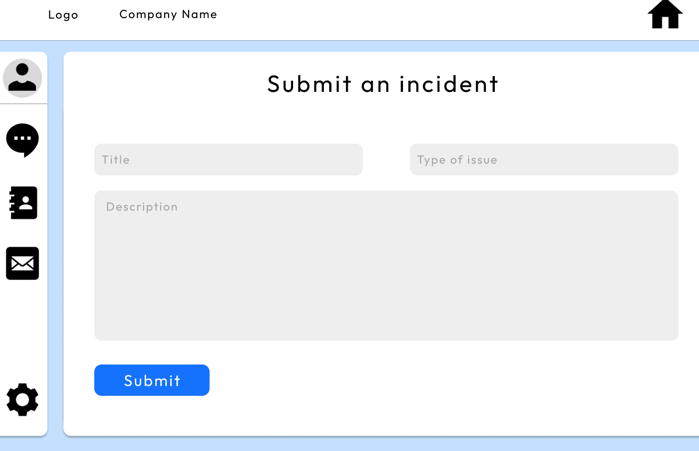
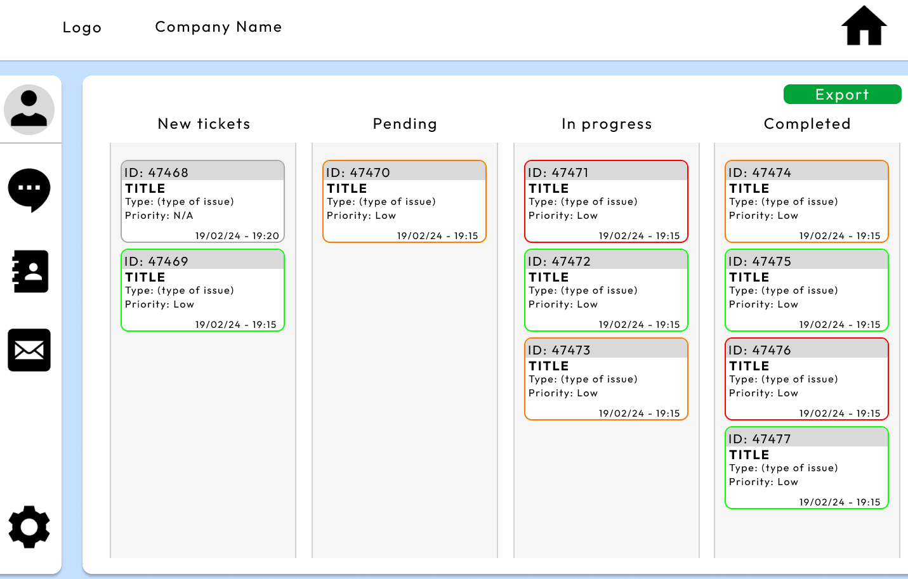
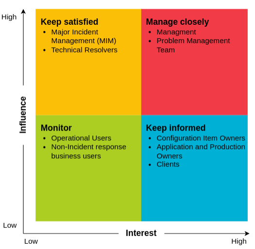
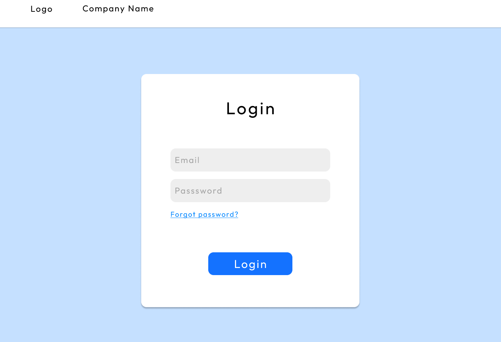
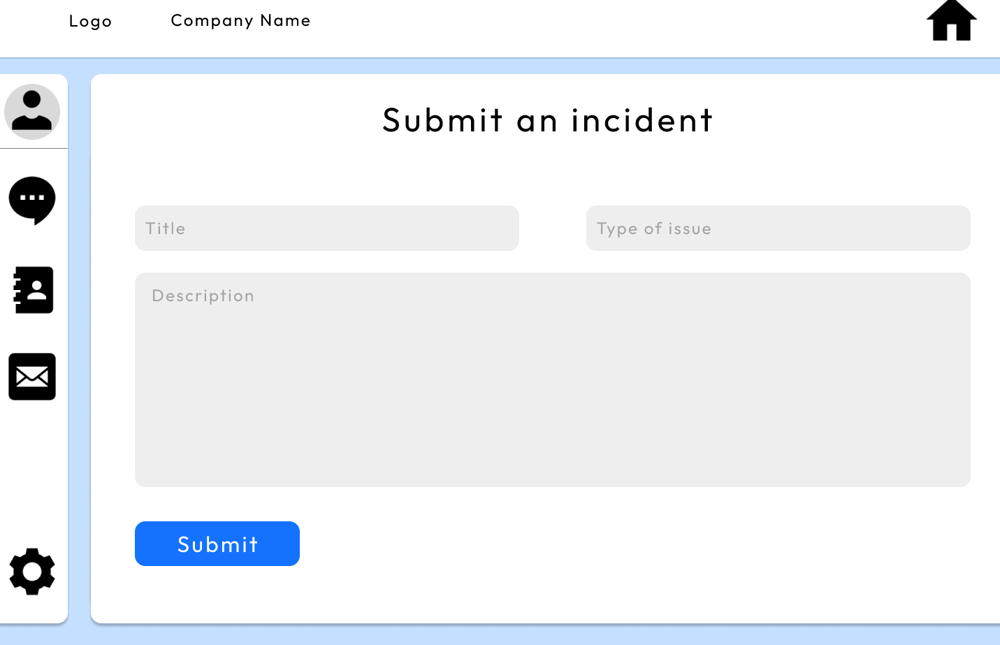
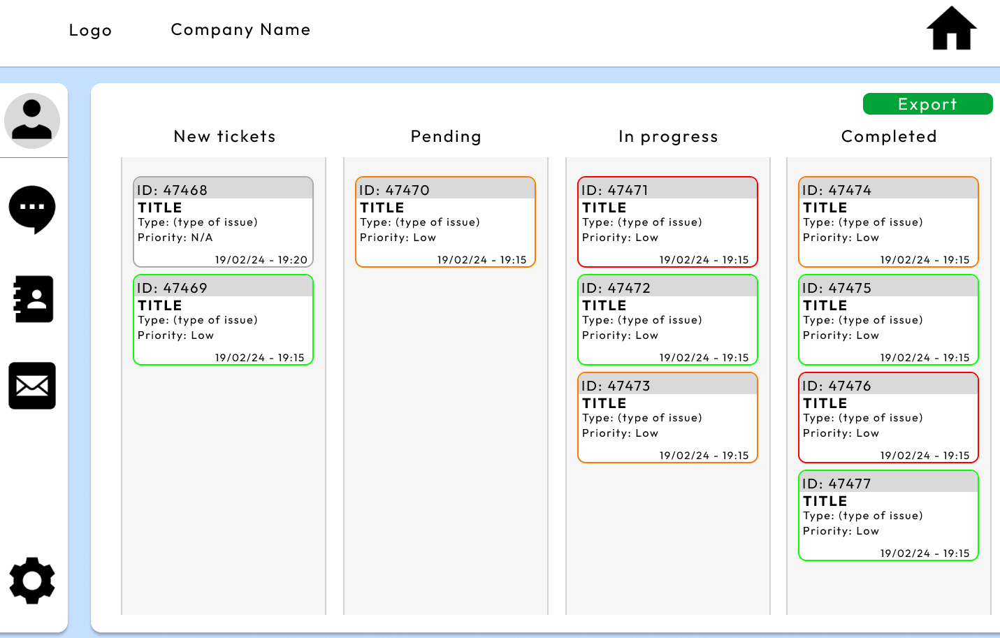
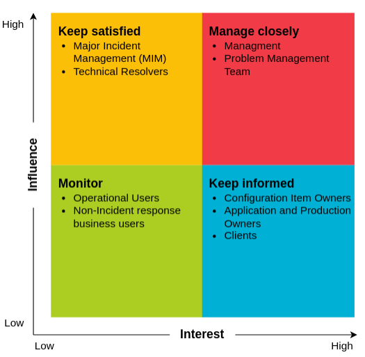
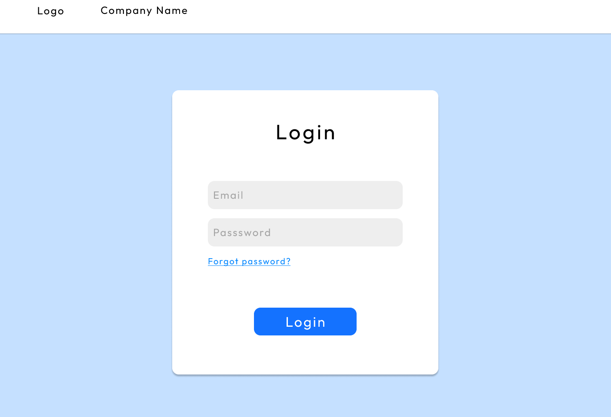

CIB Business Website

About the Project
Technologies Used: HTML, CSS, JavaScript
Code repository is private due to client confidentiality
Key Achievements:
- Team Size: 8 members working collaboratively
- My Role: Designer & Data Analyst
- Project Duration: 3 months (university group project)
- Deliverables: Fully functional business website with responsive design
- Technologies: HTML5, CSS3, JavaScript, Git version control
- Project Scope: Multi-page website with product pages, contact forms, and user-friendly navigation
Project Overview:
This project was a collaborative effort where my team and I created a fully functional website tailored to meet the needs of local businesses. Our goal was to provide a platform that not only enhanced the businesses' online presence but also offered a seamless user experience. The website was designed with both functionality and aesthetics in mind, using modern web development tools to ensure smooth navigation and responsive design. We employed HTML, CSS, and JavaScript to create an interactive and dynamic site, with features like product pages, contact forms, and a user-friendly layout. The project allowed us to apply website development skills to real-world business requirements, focusing on customer engagement and marketing. The result was a polished, well-structured website that could be easily managed and updated by the business owners themselves, offering them a competitive edge in the digital world.
My Contributions:
- Design Implementation: Led design process for all pages, ensuring consistent visual identity and user experience across the site. Created mockups and wireframes that guided development
- Data Export Functionality: Designed and implemented export feature allowing users to download business data in multiple formats. Involved JavaScript logic for data formatting and client-side file generation
- Visual Feedback System: Created intuitive visual indicators including green/red borders for form validation, status indicators, and user action feedback to improve usability and user confidence
- Responsive Design: Ensured all designed pages worked seamlessly across desktop, tablet, and mobile devices using CSS media queries and flexible layouts
- Stakeholder Analysis: Conducted stakeholder analysis to identify user needs and business requirements, informing design decisions throughout the project
- Quality Assurance: Participated in testing phase, identifying and documenting UI/UX issues for team resolution
Challenges & Solutions:
- Team Collaboration with 8 Members: Coordinating design and development across a large team presented communication challenges - Solved by:
- Using Git version control with feature branches for organized development
- Microsoft Teams for daily standups and progress updates
- Shared design documentation and style guides for consistency
- Regular code reviews to maintain quality standards
- Meeting Client Requirements: Balancing creative design with specific business needs - Addressed by:
- Prioritizing core requirements before adding enhancements
- Regular client feedback sessions during design phase
- Stakeholder analysis to understand business objectives
- Iterative design process allowing for adjustments
- Design Consistency Across 8 Developers: Ensuring uniform look and feel - Implemented:
- CSS style guide with standardized color palette, typography, spacing
- Reusable component library for common UI elements
- Design review process before merging features
- Export Functionality Complexity: Implementing client-side data export required careful planning - Solved by researching JavaScript File API, testing across browsers, and implementing error handling for edge cases
- Responsive Design Testing: Ensuring visual indicators and layouts worked across all devices - Conducted testing on multiple screen sizes and browsers, adjusting CSS media queries for optimal display

 






